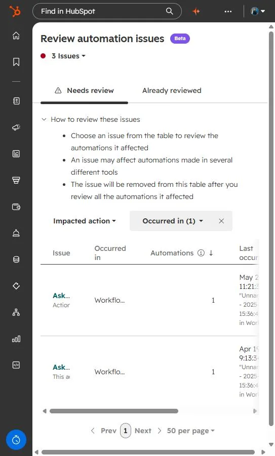

Short answer
Click Review automation issues in the top right of the Workflows tab. HubSpot lists each failing action, the automations it touched, and the last time it happened. Fix the action in the workflow, then mark the issue reviewed so it leaves the table.
1. Find the issues
HubSpot's knowledge base places the link in the top right of the workflows list. The count next to the title shows how many issues need review. Each row names the action, the tool it ran in, and the most recent occurrence.


2. Read an issue
Select an issue to see the automations it affected. Some issues are action errors, and some are notices that an action was retired. Both can stop a workflow at that step.
In my portal I had this as an example. Two issues named the same action, one a failure and one a notice that the action was sunset on March 31, 2026, so workflows using it would stop. You may have something like this.
3. Clear it
For a retired action, replace it. HubSpot's notice points to the Use a custom LLM action in the AI panel. For a failed action, fix the setting or the data it needs, then check the workflow's enrollment history to confirm new records now run through.
Re-enrollment problems are covered in why a contact won't re-enroll.